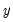
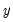

|
|
|
is specified using an expression with a boolean operator or function returning (0, 1) values (e.g., “z > 3”or “z > w”), but any argument providing (0, non-zero) values is sufficient.
returns 1 if x is negative, 0 otherwise.
 is non-zero (true); otherwise returns
is non-zero (true); otherwise returns  .
.  if
if  is non-zero (true); otherwise returns .
is non-zero (true); otherwise returns .